Intake Manifold: Service and Repair
Intake Manifold Replacement
Removal Procedure
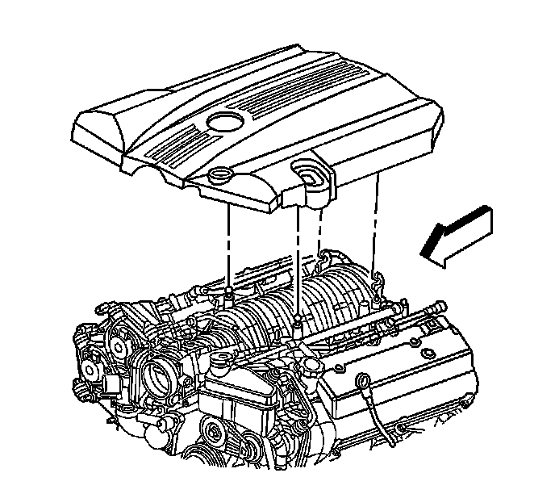
1. Remove the cross car brace. Refer to Cross Vehicle Brace Replacement (Cross Vehicle Brace Replacement) .
2. Remove the fuel injector sight shield. Refer to Fuel Injector Sight Shield Replacement (Service and Repair) .
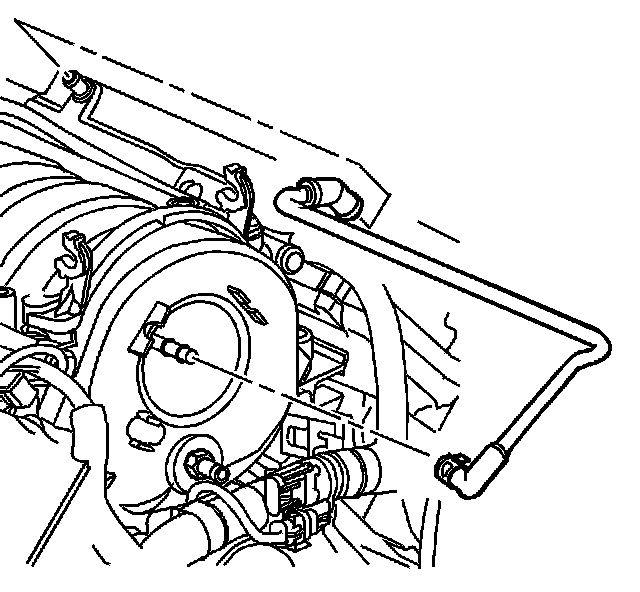
3. Remove the positive crankcase ventilation (PCV) dirty air tube from the camshaft cover. Refer to Crankcase Ventilation Hoses/Pipes Replacement (Service and Repair) .
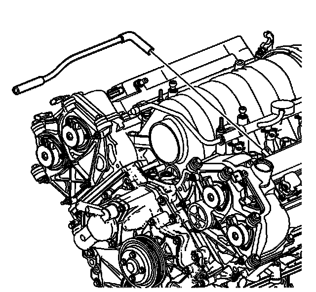
4. Remove the PCV fresh air tube. Refer to Crankcase Ventilation Hoses/Pipes Replacement (Service and Repair) .
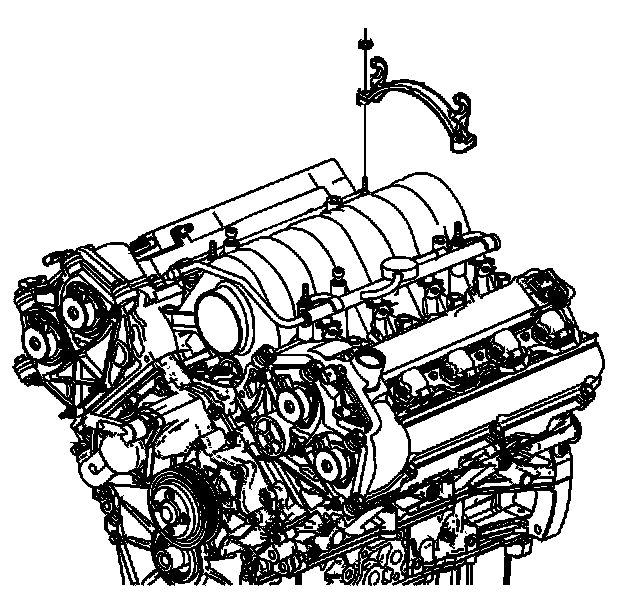
5. Remove the sight shield bracket nuts.
6. Remove the sight shield bracket.
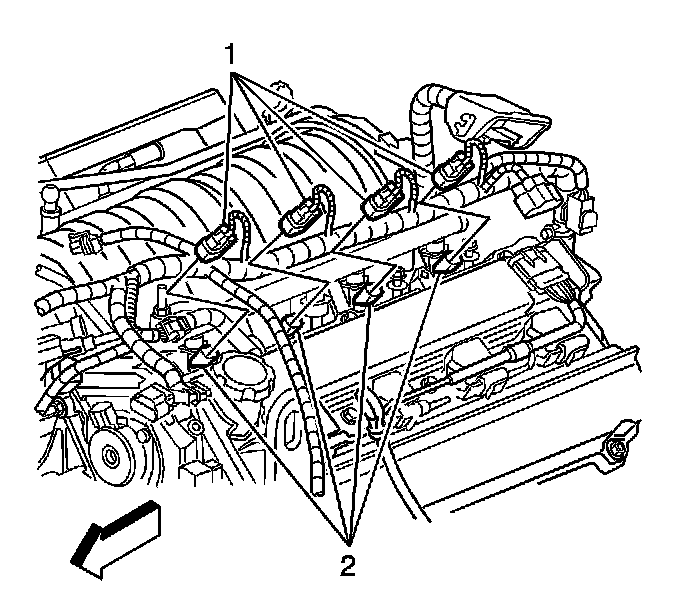
7. Disconnect the left side fuel injector electrical connectors (1) from the fuel injectors (2).
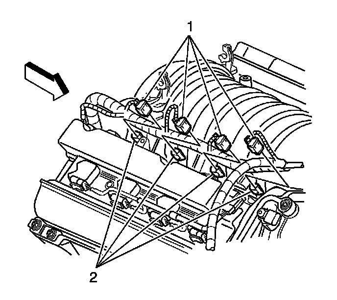
8. Disconnect the right side fuel injector electrical connectors (1) from the fuel injectors (2).
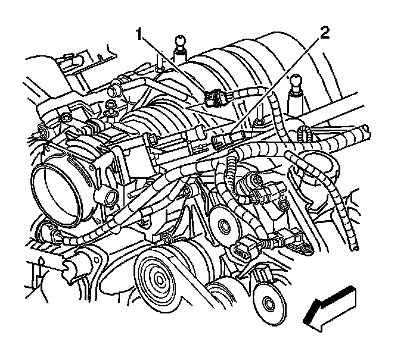
9. Disconnect the evaporative emission (EVAP) purge valve line (2) and electrical connector (1).
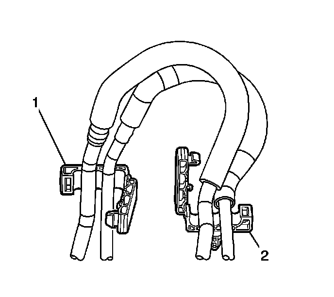
10. Remove the EVAP line from the retaining feature (2) at the rear of the right head. Position the line aside.
11. Relieve the fuel system pressure. Refer to Fuel Pressure Relief (With CH 48027) (Fuel Pressure Relief (With CH 48027))Fuel Pressure Relief (Without CH 48027) (Fuel Pressure Relief (Without CH 48027))
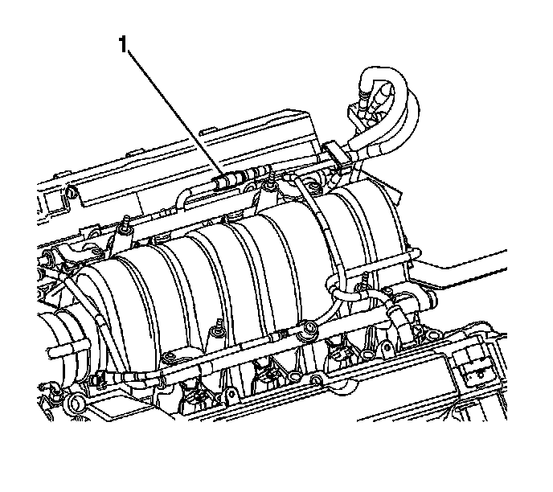
12. Disconnect the fuel line from the fuel rail (1). Refer to Metal Collar Quick Connect Fitting Service (Metal Collar Quick Connect Fitting Service) or Plastic Collar Quick Connect Fitting Service (Plastic Collar Quick Connect Fitting Service) .
13. Remove the fuel line from the retainer at the rear of the right head.
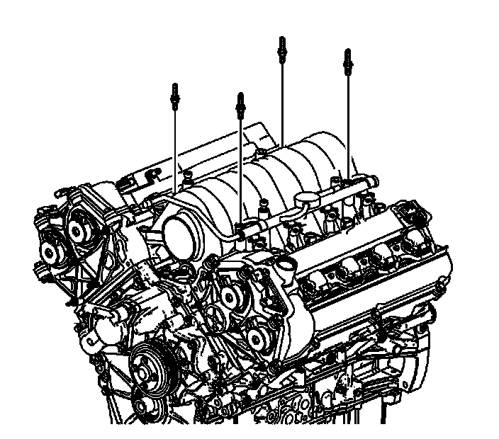
14. Remove the fasteners attaching the fuel rail to the intake manifold.
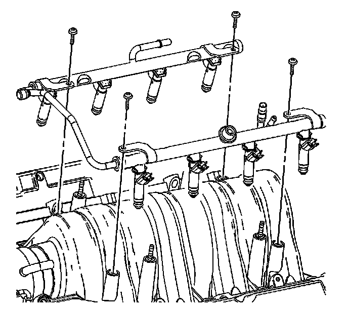
15. Lift the entire fuel rail and injector assembly from the intake manifold.

16. Loosen the plenum duct clamp (1) at the front of the intake manifold.
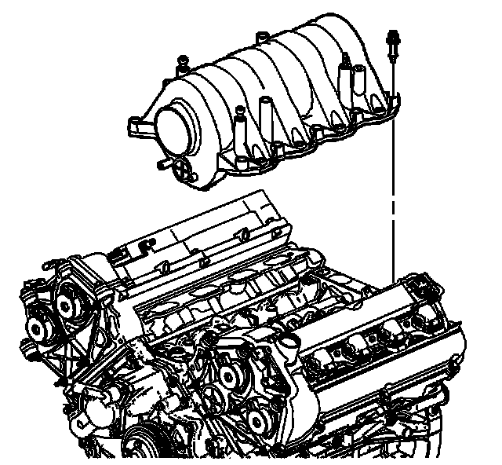
17. Loosen the bolts attaching the intake manifold to the cylinder heads.
18. Remove the intake manifold by using an upward lifting motion at the rear of the manifold assembly.
19. Inspect the intake manifold. Refer to Intake Manifold Cleaning and Inspection (Overhaul) .
Installation Procedure
1. Transfer the necessary parts when replacing the intake manifold. Refer to Intake Manifold Disassemble (Overhaul) and Intake Manifold Assemble (Overhaul) .
2. Lightly grease the inside edge of the rubber plenum duct.
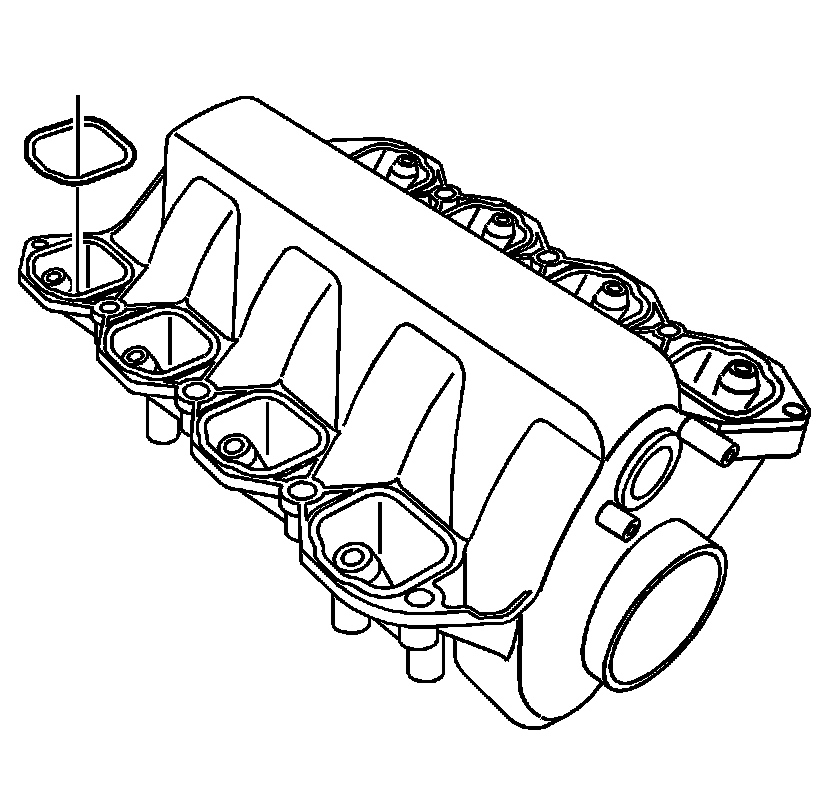
3. Ensure that the NEW gaskets are installed to the intake manifold.
4. Place the intake manifold in position.
5. Position the front of the intake manifold into the plenum duct.
6. Position the rear of the intake manifold downward onto the cylinder heads.
7. Loosely install the 10 bolts attaching the intake manifold to the cylinder heads.

Notice: Refer to Fastener Notice (Fastener Notice) .
8. Tighten the intake manifold bolts in sequence (1-10).
Tighten the intake manifold bolts to 10 N.m (89 lb in).
9. Ensure that the plenum duct is fully attached to the front of the intake manifold.
Tighten the plenum duct clamp to 2.25 N.m (20 lb in).
10. Lubricate the intake manifold fuel injector bores with light mineral oil, clean engine oil or equivalent. Refer to Sealers, Adhesives, and Lubricants (Specifications) for the correct part number.
Important: DO NOT force the injectors into position.
11. Install the entire fuel rail and injector assembly into the intake manifold by pressing the fuel rail and injector simultaneously into the correct position.
12. Install the bolts attaching the fuel rail to the intake manifold.
Tighten the fuel rail bolts to 10 N.m (89 lb in).
13. Install the fuel line to the retainer at the rear of the right head.
14. Connect the fuel line to the fuel rail (1). Refer to Metal Collar Quick Connect Fitting Service (Metal Collar Quick Connect Fitting Service) or Plastic Collar Quick Connect Fitting Service (Plastic Collar Quick Connect Fitting Service) .
15. Install the EVAP purge valve line to the retainer (2) at the rear of the right head.
16. Install the EVAP purge valve line (2) and electrical connector (1).
17. Connect the right side fuel injector electrical connectors (1) to the fuel injectors (2).
18. Connect the left side fuel injector electrical connectors (1) to the fuel injectors (2).
19. Install the sight shield bracket.
20. Install the sight shield bracket nuts.
Tighten the sight shield bracket nuts to 10 N.m (89 lb in).
21. Install the PCV fresh air tube to the engine.
22. Install the PCV dirty air tube to the engine.
23. Install the fuel injector sight shield. Refer to Fuel Injector Sight Shield Replacement (Service and Repair) .
24. Install the cross car brace. Refer to Cross Vehicle Brace Replacement (Cross Vehicle Brace Replacement) .